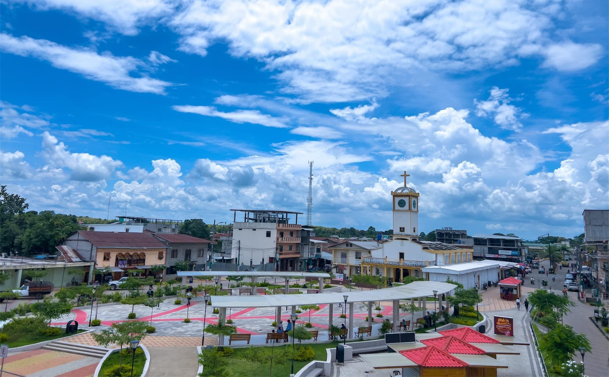

🌿
Naturaleza
Descubre espacios naturales como Jauneche y el Humedal Las Garzas.

PALENQUE · LOS RÍOS
Vive una experiencia entre naturaleza, paisajes, tradiciones montubias y gastronomía ecuatoriana.
Explorar destinosCONOCE PALENQUE
Palenque, en la provincia de Los Ríos, ofrece paisajes rurales, espacios naturales, lugares históricos y manifestaciones de la cultura montubia.
Descubre espacios naturales como Jauneche y el Humedal Las Garzas.
Disfruta de paisajes rurales y del balneario de agua dulce La Reveza.
Conoce las expresiones culturales montubias, los rodeos y los amorfinos.
Descubre preparaciones tradicionales de la gastronomía de Palenque.
LUGARES PARA CONOCER

Espacio de agua dulce ideal para disfrutar del paisaje y actividades recreativas.
Conocer más →
Área natural caracterizada por su biodiversidad y riqueza ambiental.
Conocer más →
Un espacio natural donde se puede apreciar la flora y fauna del cantón.
Conocer más →SABORES DE PALENQUE
La gastronomía forma parte importante de la identidad cultural de Palenque. Entre sus preparaciones tradicionales se encuentran el bollo de pescado y la chanfaina.
Ver experienciasPreparación tradicional elaborada con ingredientes de la cocina local.
Plato tradicional presente en la gastronomía de Palenque.
PLANIFICA TU EXPERIENCIA
Explora nuestros destinos y experiencias turísticas.
Contáctanos